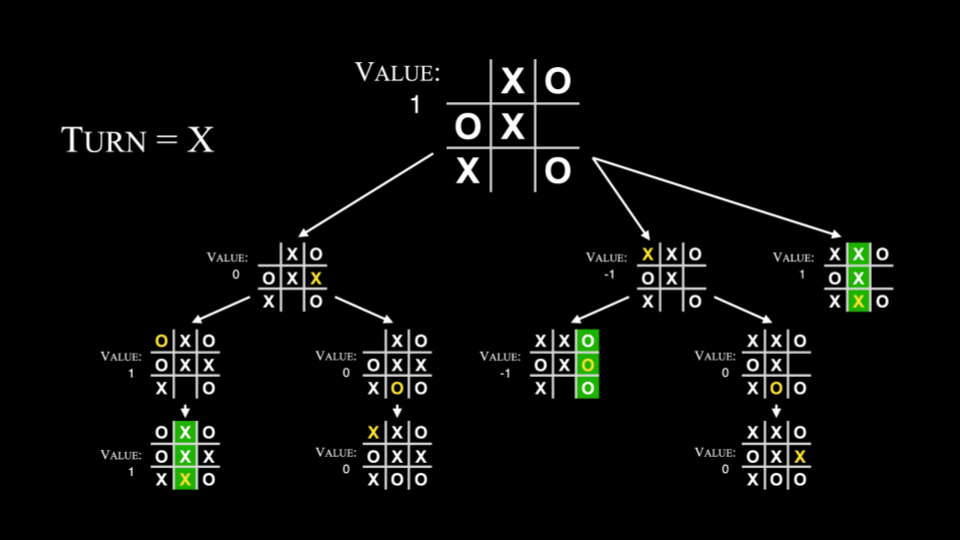

Artificial Intelligence
- Welcome!
- Generative Artificial Intelligence
- Prompt Engineering and Copilot
- AI
- Decision Trees
- Minimax
- Machine Learning
- Deep Learning
- Large Language Models
- Summing Up
Welcome!
- In computer science and programming circles, rubber ducking or rubber duck debugging is the act of speaking to an inanimate object to be able to talk through a challenging problem like a bug in one’s code.
- Most recently, CS50 created our own rubber duck debugger at CS50.ai, which uses artificial intelligence (AI) as a way by which to interact with students to help them with their own challenging problems.
- Students engaging with this tool can begin understanding the potential of what AI can offer the world.
Generative Artificial Intelligence
- Numerous AI tools have created the potential for artificially generated images to enter the world.
- Up until years past, most of these tools had numerous tells that might indicate to an observer that an image is AI-generated.
- However, tools are becoming exceedingly good at generating these images.
- Indeed, as technology improves, it will soon be almost, if not entirely, impossible for such images to be detected with the naked eye.
- Generative AI can be used to create photos, video, music, and text.
Prompt Engineering and Copilot
- Prompt engineering is the way by which an individual can ask good questions of an AI.
- We use a system prompt to teach the AI how to interact with users. We teach the AI how to work with students using such a prompt.
- User prompts are those provided by users to interact with the AI. With these prompts, students interact with the AI.
-
We can implement this in code as follows:
# Adds to system prompt. from openai import OpenAI client = OpenAI() user_prompt = input("Prompt: ") system_prompt = "Limit your answer to one sentence. Pretend you're a cat." response = client.responses.create( input=user_prompt, instructions=system_prompt, model="gpt-5" ) print(response.output_text)You can run this code with
python chat.py. You can download this code here - Generative AI can also be used to generate code! This kind of functionality can amplify your abilities as a growing and well-practiced programmer.
- Copilot is one such tool for generating code. In CS50, we do not allow the use of generative AI, outside the course’s own tools. CS50 provides clear guidance for students, in our academic honesty policy, on what is considered reasonable and unreasonable use of AI.
AI
- AI has been with us for many decades! Software has long adapted to users. Algorithms look for patterns in junk mail, in handwriting recognition, in creating movie and video recommendations, and in playing games.
- In games, for example, step-by-step instructions may allow a computerized adversary to play a game of Breakout.
Decision Trees
- Decision trees are used by an algorithm to decide what decision to make.
-
For example, in Breakout, an algorithm may consider what choice to make based on the instructions in the code:
While game is ongoing: If ball is left of paddle: Move paddle left Else if ball is right of paddle: Move paddle right Else: Don't move paddle - With most games, they attempt to minimize the number of calculations required to compete with the player.
Minimax
- AI is often good at gameplay because it reduces moves and outcomes to mathematical values.
- You can imagine where an algorithm may score outcomes as positive, negative, and neutral.
- In tic-tac-toe, the AI may consider a board where the computer wins as
1and one where the computer loses as-1. - You can imagine how a computer may look at a decision tree of potential outcomes and assign scores to each potential move.
- The computer will attempt to win by maximizing its own score.
-
In the context of tic-tac-toe, the algorithm may conceptualize this as follows:
If player is X: For each possible move: Calculate score for board Choose move with highest score Else if player is O: For each possible move: Calculate score for board Choose move with lowest score -
This could be pictured as follows:

- Because computers are so powerful, they can crunch massive potential outcomes. However, the computers in our pockets or on our desks may not be able to calculate trillions of options for ever-more-complex game trees. This is where machine learning can help.
Machine Learning
- Machine learning is a way by which a computer can learn through reinforcement.
- A computer can learn how to flip a pancake.
- A computer can learn how to play The Floor is Lava.
- The computer repeats trial after trial after trial to discover what behaviors to repeat and those not to repeat.
-
Within much of AI-based algorithms, there are concepts of explore vs. exploit, where the AI may randomly try something that may not be considered optimal. Randomness can yield better outcomes. This can be represented in code as follows:
epsilon = 0.10 If random() < epsilon: Make a random move Else: Make the move with the highest valueNotice that
epsilonrepresents the rate of randomness.
Deep Learning
- Supervised learning is a form of AI-based learning where the human partners with the AI. For example, you might click the “spam” button in your email client to teach the AI what emails it should consider spam.
- However, supervised learning does not scale well to larger problems. Hence, unsupervised learning is a means by which the AI can learn with minimal human intervention.
- Deep learning uses neural networks whereby problems and solutions are explored.
-
For example, deep learning may attempt to predict whether a blue or red dot will appear somewhere on a graph. Consider the following image:

- Existing training data is used to predict an outcome. Further, more training data may be created by the AI to discover further patterns.
-
Deep learning creates nodes (pictured below) that associate inputs and outputs.

Large Language Models
- Large language models (LLMs) are massive models that make predictions based on huge amounts of training.
- Just a few years ago, AI was not very good at completing and generating sentences. Google published a paper in 2017 regarding how these AIs can have their attention drawn to the relationships between various words.
- Generative Pre-trained Transformer (GPT for short) are trained on the relationships between words.
- The AI encodes words into embeddings to find relationships between words. Thus, through a huge amount of training, a massive neural network can predict the association between words - resulting in the ability for generative AI to generate content and even have conversations with users.
- Sometimes, LLMs can hallucinate and provide incorrect information.
Summing Up
In this lesson, you learned about some of the technology behind CS50.ai. Specifically, we discussed…
- Generative Artificial Intelligence
- Prompt Engineering
- AI
- Decision Trees
- Minimax
- Machine Learning
- Deep Learning
- Large Language Models
This was CS50!